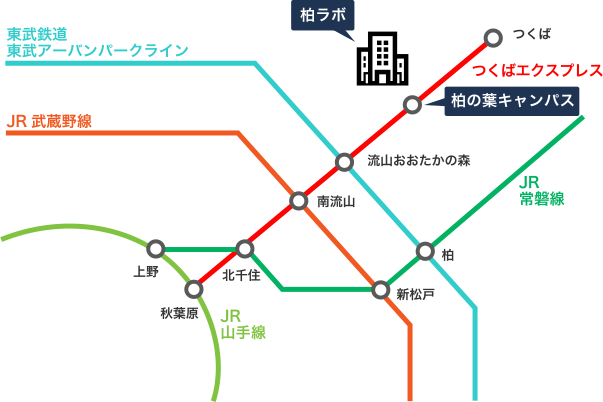

柏ラボ
詳細周辺地図
〒277-0871
千葉県柏市若柴178-4-4 東京大学
柏の葉キャンパス駅前 サテライト 6階
TEL
04-7135-5508（代表）
FAX 04-7135-5534（代表）
電車をご利用の場合

| 出発駅 | 所有時間 |
|---|---|
| つくばエクスプレス秋葉原駅 | 約30分 |
| つくばエクスプレスつくば駅 | 約20分 |
| つくばエクスプレス北千住駅 | 約20分 |
バスをご利用の場合
| 乗り場 | 系統番号 | 行先 | 所要時間 | 時刻表 |
|---|---|---|---|---|
| 柏駅西口 | 柏09 | 柏の葉キャンパス駅東口 | 約23分 | |
| 柏駅西口 | 西柏02 | 柏の葉キャンパス駅西口 | 約23分 | |
| 流山おおたかの森駅東口 | 西柏03 | 柏の葉キャンパス駅西口 | 約36分 | |
| 江戸川台駅東口 |
西柏04 西柏10 |
柏の葉キャンパス駅東口 | 約25分 |
飛行機をご利用の場合
羽田空港をご利用の方
| 乗り場 | 出発時刻 | ||||||||||||
|---|---|---|---|---|---|---|---|---|---|---|---|---|---|
| 国際線ターミナル⑥乗り場 | 8:25 | 10:45 | 11:50 | 14:15 | 15:15 | 16:15 | 17:15 | 18:15 | 19:15 | 19:55 | 20:30 | 21:15 | 22:15 |
| 第2ターミナル⑬乗り場 | 8:35 | 10:55 | 12:00 | 14:25 | 15:25 | 16:25 | 17:25 | 18:25 | 19:25 | 20:05 | 20:40 | 21:25 | 22:25 |
| 第1ターミナル⑬乗り場 | 8:40 | 11:00 | 12:05 | 14:30 | 15:30 | 16:30 | 17:30 | 18:30 | 19:30 | 20:10 | 20:45 | 21:30 | 22:30 |
| 乗り場 | 出発時刻 | ||||||||
|---|---|---|---|---|---|---|---|---|---|
| 柏の葉キャンパス駅西口②乗り場 | 5:07 | 5:57 | 6:57 | 8:04 | 9:04 | 10:54 | 12:01 | 15:01 | 16:01 |
成田空港をご利用の方
| 乗り場 | 出発時刻 | ||||||||||||
|---|---|---|---|---|---|---|---|---|---|---|---|---|---|
| 成田空港第３ターミナル | 11:05 | 19:15 | |||||||||||
| 成田空港第２ターミナル | 11:10 | 19:20 | |||||||||||
| 成田空港第１ターミナル | 11:15 | 19:25 | |||||||||||
| 乗り場 | 出発時刻 | ||||||||
|---|---|---|---|---|---|---|---|---|---|
| 柏の葉キャンパス駅（西口） | 6:30 | 13:30 | |||||||